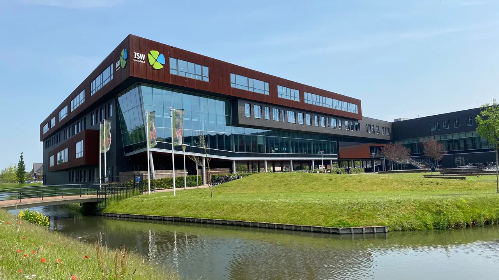
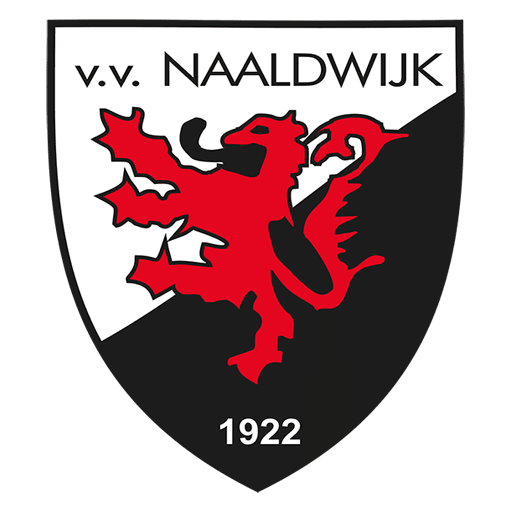

Hallo, dit is een website over Wessel Valstar. Het bestaat uit 3 onderdelen (zie navigatie).
Ik heb deze website gemaakt voor een opdracht van Informatica, ik heb deze onderdelen gekozen omdat je dan mij beter en sneller leert kennen.
Bij alle onderwerpen krijg je 3 stukjes tekst met 1 tabel. Het gaat over mij of wat ik er mee te maken heb en wat voor rol het in mijn leven speelt. In de navigatie kan je op een onderwerp klikken en dan ga je direcht naar het onderwerp met de tekst. De teksten gaan eerst over de plek, dan het schema en dan wat ik belangrijk en leuk vind.
Hier onder zie je plaatjes die bij een onderwerp past. Veel plezier met lezen!
 